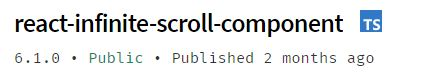
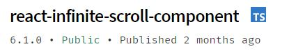
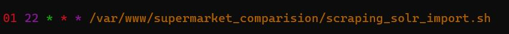

Supermarket Comparision
by Simon Sölder & Lena Ebner
Information Retrieval SS 2021 FH Salzburg
Approach
- Content Scrapen
- Solr Server Import
- Server Configuration
- React Typescript UI
Scrapen
Supermarket Example
import { Supermarket } from "../type";
const lidlPages: string[] = [
"https://www.lidl.at/angebote",
"https://www.lidl.at/sortimente/neu-bei-lidl-oesterreich",
];
const lidlSelectors = {
titles: ".product__text .product__title",
quantity: ".pricebox__basic-quantity",
prices: ".pricebox__price",
images: ".product__image > picture > img",
product: ".product",
};
export const lidl: Supermarket = {
title: "lidl",
pages: lidlPages,
imagePath: "./images/lidl/",
selectors: lidlSelectors,
};
export default lidl;
Iterate over all supermarkets and pages
(async () => {
for (let i = 0; i <supermarkets.length; i++) {
const supermarket = supermarkets[i];
for (let j = 0; j <supermarket.pages.length; j++) {
await scrapeSupermarketPage({
url: supermarket.pages[j],
supermarketLabel: supermarket.title,
selectors: supermarket.selectors,
});}
}
const finalProducts = JSON.stringify(data);
writeFileSync("./public/products.json", finalProducts);
})();
Start a Headless Browser with Playwright
const scrapeSupermarketPage = async ({
supermarketLabel, url, selectors
}) => {
const browser = await chromium.launch({
headless: true,
});
const page = await browser.newPage();
await page.goto(url);
await page.waitForTimeout(5000);
const allProducts = await page.$$eval(
selectors.product, (products, object
) => { ... }
const titles = product.querySelectorAll(supermarketSelector.titles);
Solr Import
const SOLR_URL
= "https://vm-cyan.multimediatechnology.at/solr/products";
const buildDocument = (product) => {
const document = {};
document[TITLE_FIELD] = product.title;
document[QUANTITY_FIELD] = product.quantity;
document[PRICE_FIELD] = product.price;
document[IMAGE_FIELD] = product.image;
document[SUPERMARKET_FIELD] = product.supermarket;
return document;
};
const postSolrRequest = async (url, body) => {
const jsonResponse = await fetch(`${SOLR_URL}/${url}`, {
method: "POST",
body: JSON.stringify(body),
headers: { "Content-Type": "application/json" },
});
...
}
Server Config
solrconfig.xml
<requestHandler name="/browse" class="solr.SearchHandler">
<lst name="defaults">
<str name="echoParams">explicit</str>
<!-- Query settings -->
<str name="defType">edismax</str>
<str name="qf">
title_t_sort^10 quantity_t_de^2.0 supermarket_t_sort^1.2
</str>
<str name="mm">100%</str>
<str name="q.alt">*:*</str>
<str name="rows">15</str>
<str name="fl">*,score</str>
<str name="mlt.qf">
title_t_sort^10 quantity_txt_de^2.0 supermarket_t_sort^1.2
</str>
<str name="mlt.fl">title_t_sort,quantity_t_de,supermarket_t_sort,price_f,id</str>
<int name="mlt.count">3</int>
<!-- Faceting defaults -->
<str name="facet">on</str>
...
<!-- Highlighting defaults -->
<str name="hl">on</str>
<str name="hl.fl">title_t_sort quantity_t_de supermarket_t_sort</str>
<str name="hl.preserveMulti">true</str>
<str name="hl.encoder">html</str>
<str name="hl.simple.pre"><b></str>
<str name="hl.simple.post"></b></str>
<!-- Spell checking defaults -->
<str name="spellcheck">on</str>
...
</lst>
<!-- append spellchecking to our list of components -->
<arr name="last-components">
<str>spellcheck</str>
</arr>
</requestHandler>
React UI

 

Deployment
Deployment with Github Actions
jobs:
build:
runs-on: ubuntu-latest
defaults:
run:
working-directory: ./frontend
steps:
- name: Checking out repo
uses: actions/checkout@v1
- name: Use node.js
uses: actions/setup-node@v1
with:
node-version: "15"
- name: Installing packages
run: npm i
- name: Building create-react-app
run: npm run build
- name: RSync Deployment
uses: burnett01/rsync-deployments@4.1
with:
switches: -avzr --delete --exclude="" --include="" --filter=""
path: ./
remote_path: /var/www/supermarket_comparision/
remote_host: ${{ secrets.DEPLOY_HOST }}
remote_port: ${{ secrets.DEPLOY_PORT }}
remote_user: ${{ secrets.DEPLOY_USER }}
remote_key: ${{ secrets.DEPLOY_PRIVATE_KEY }}
Solr Server & App on VM
Cronjob for scraping and importing daily
Live Demo
Are you hungry?
Thanks for listening :)